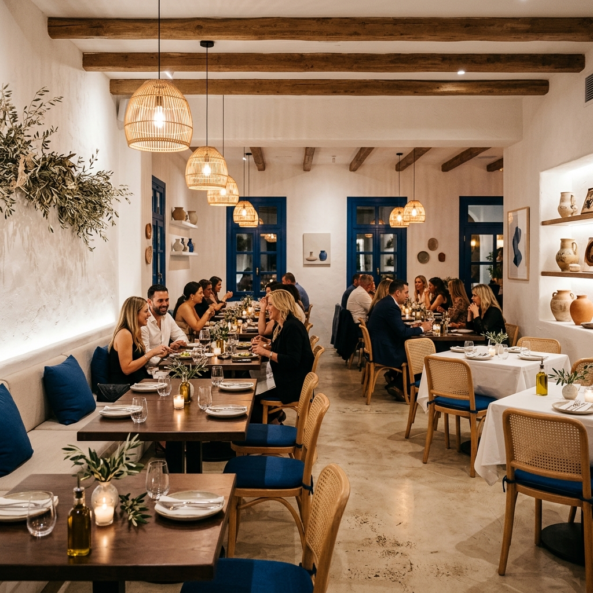

Autenticitate grecească la tine în oraș.

Bine ați venit la Taverna Santorini, locul unde tradiția culinară a Greciei prinde viață. Situat în Drobeta-Turnu Severin, restaurantul nostru aduce mai aproape de tine spiritul vibrant și aromele inconfundabile ale insulelor grecești.
Fiecare preparat este pregătit cu pasiune, folosind ingrediente proaspete, ulei de măsline extravirgin și rețete autentice transmise din generație în generație. De la faimosul Gyros și Souvlaki la brânza Feta cremoasă și fructele de mare perfect gătite, aici vei găsi gustul adevărat al vacanțelor tale în Grecia.
Drobeta-Turnu Severin, România
Strada Exemplu, Nr. 123
Luni - Joi: 12:00 - 22:00
Vineri - Duminică: 12:00 - 23:30